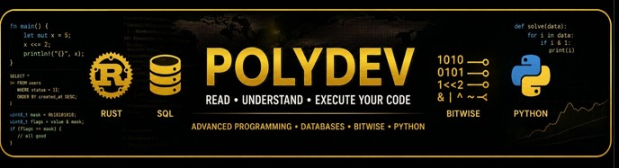

Material técnico demonstrando funções PL/SQL para Oracle 23AI usando operações bitwise: máscaras, permissões, flags, workflow, configuração binária, XOR, shifts e empacotamento de campos.
CREATE OR REPLACE PACKAGE pkg_bitwise_polydev AS
FUNCTION tem_permissao(p_permissoes NUMBER, p_flag NUMBER) RETURN NUMBER;
FUNCTION unir_workflow(p_estado1 NUMBER, p_estado2 NUMBER) RETURN NUMBER;
FUNCTION diff_config(p_old NUMBER, p_new NUMBER) RETURN NUMBER;
FUNCTION toggle_flag(p_valor NUMBER, p_flag NUMBER) RETURN NUMBER;
FUNCTION extrair_campo(p_valor NUMBER, p_shift NUMBER, p_mask NUMBER) RETURN NUMBER;
FUNCTION popcount(p_valor NUMBER) RETURN NUMBER;
FUNCTION merge_override(p_base NUMBER, p_override NUMBER, p_mask NUMBER) RETURN NUMBER;
FUNCTION ipv4_network(p_ip NUMBER, p_mask NUMBER) RETURN NUMBER;
FUNCTION checksum_xor(p_a NUMBER, p_b NUMBER) RETURN NUMBER;
FUNCTION shift_left(p_valor NUMBER, p_posicoes NUMBER) RETURN NUMBER;
FUNCTION shift_right(p_valor NUMBER, p_posicoes NUMBER) RETURN NUMBER;
END pkg_bitwise_polydev;
/
CREATE OR REPLACE PACKAGE BODY pkg_bitwise_polydev AS
FUNCTION bit_or(p_a NUMBER, p_b NUMBER) RETURN NUMBER IS
BEGIN
RETURN p_a + p_b - BITAND(p_a, p_b);
END;
FUNCTION bit_xor(p_a NUMBER, p_b NUMBER) RETURN NUMBER IS
BEGIN
RETURN p_a + p_b - 2 * BITAND(p_a, p_b);
END;
FUNCTION bit_not_masked(p_valor NUMBER, p_mask NUMBER) RETURN NUMBER IS
BEGIN
RETURN p_mask - BITAND(p_valor, p_mask);
END;
-- 1. Verificação de Permissão Específica (Bitmask)
FUNCTION tem_permissao(p_permissoes NUMBER, p_flag NUMBER) RETURN NUMBER IS
BEGIN
RETURN CASE
WHEN BITAND(p_permissoes, p_flag) = p_flag THEN 1
ELSE 0
END;
END;
-- 2. União de Estados de Workflow
FUNCTION unir_workflow(p_estado1 NUMBER, p_estado2 NUMBER) RETURN NUMBER IS
BEGIN
RETURN bit_or(p_estado1, p_estado2);
END;
-- 3. Detecção de Alterações de Configuração (Diff Binário)
FUNCTION diff_config(p_old NUMBER, p_new NUMBER) RETURN NUMBER IS
BEGIN
RETURN bit_xor(p_old, p_new);
END;
-- 4. Inversão Seletiva de Flags (Toggle)
FUNCTION toggle_flag(p_valor NUMBER, p_flag NUMBER) RETURN NUMBER IS
BEGIN
RETURN bit_xor(p_valor, p_flag);
END;
-- 5. Extração de Campo Empacotado
FUNCTION extrair_campo(p_valor NUMBER, p_shift NUMBER, p_mask NUMBER) RETURN NUMBER IS
BEGIN
RETURN BITAND(TRUNC(p_valor / POWER(2, p_shift)), p_mask);
END;
-- 6. Contagem Rápida de Flags Ativas (Popcount)
FUNCTION popcount(p_valor NUMBER) RETURN NUMBER IS
v_num NUMBER := p_valor;
v_count NUMBER := 0;
BEGIN
WHILE v_num > 0 LOOP
v_count := v_count + BITAND(v_num, 1);
v_num := TRUNC(v_num / 2);
END LOOP;
RETURN v_count;
END;
-- 7. Merge de Configurações com Prioridade (Override)
FUNCTION merge_override(p_base NUMBER, p_override NUMBER, p_mask NUMBER) RETURN NUMBER IS
BEGIN
RETURN bit_or(
BITAND(p_base, bit_not_masked(p_base, p_mask)),
BITAND(p_override, p_mask)
);
END;
-- 8. Cálculo de Endereço de Rede (IPv4 Simulado)
FUNCTION ipv4_network(p_ip NUMBER, p_mask NUMBER) RETURN NUMBER IS
BEGIN
RETURN BITAND(p_ip, p_mask);
END;
-- 9. Checksum XOR para Validação Rápida
FUNCTION checksum_xor(p_a NUMBER, p_b NUMBER) RETURN NUMBER IS
BEGIN
RETURN bit_xor(p_a, p_b);
END;
-- 10. Simulação de Shift Left
FUNCTION shift_left(p_valor NUMBER, p_posicoes NUMBER) RETURN NUMBER IS
BEGIN
RETURN p_valor * POWER(2, p_posicoes);
END;
-- 10. Simulação de Shift Right
FUNCTION shift_right(p_valor NUMBER, p_posicoes NUMBER) RETURN NUMBER IS
BEGIN
RETURN TRUNC(p_valor / POWER(2, p_posicoes));
END;
END pkg_bitwise_polydev;
/
Usada para verificar se determinada permissão está ativa dentro de um número que representa várias permissões.
SELECT pkg_bitwise_polydev.tem_permissao(7, 4) AS pode_executar
FROM dual;Resultado esperado: 1
Combina dois estados usando lógica OR. Útil quando um processo acumula fases executadas.
SELECT pkg_bitwise_polydev.unir_workflow(1, 4) AS workflow_final
FROM dual;Resultado esperado: 5
Usa XOR para identificar quais flags mudaram entre duas configurações.
SELECT pkg_bitwise_polydev.diff_config(10, 14) AS flags_alteradas
FROM dual;Resultado esperado: 4
Liga uma flag se ela estiver desligada, ou desliga se ela estiver ligada.
SELECT pkg_bitwise_polydev.toggle_flag(7, 2) AS novo_valor
FROM dual;Resultado esperado: 5
Extrai um campo armazenado dentro de um número maior, simulando estruturas compactadas.
SELECT pkg_bitwise_polydev.extrair_campo(172, 2, 7) AS campo_extraido
FROM dual;Uso típico: protocolos, flags compactadas, motores de regras e metadados.
Conta quantos bits estão ligados dentro de um número.
SELECT pkg_bitwise_polydev.popcount(15) AS flags_ativas
FROM dual;Resultado esperado: 4
Permite aplicar uma configuração prioritária apenas sobre uma área controlada pela máscara.
SELECT pkg_bitwise_polydev.merge_override(10, 12, 6) AS config_final
FROM dual;Aplicação real: perfil padrão + configuração específica do usuário.
Simula o cálculo de endereço de rede aplicando AND entre IP numérico e máscara.
SELECT pkg_bitwise_polydev.ipv4_network(3232235777, 4294967040) AS rede
FROM dual;Exemplo conceitual: IP 192.168.1.1 com máscara 255.255.255.0.
Usa XOR para gerar uma validação simples entre dois valores.
SELECT pkg_bitwise_polydev.checksum_xor(125, 89) AS checksum
FROM dual;Uso típico: validação leve, comparação rápida e detecção simples de alteração.
Como PL/SQL não usa operadores clássicos de shift como C, Rust ou Java, simulamos deslocamento com potência de 2.
SELECT pkg_bitwise_polydev.shift_left(8, 2) AS shift_left
FROM dual;
SELECT pkg_bitwise_polydev.shift_right(32, 3) AS shift_right
FROM dual;Resultado esperado: 32 e 4
Operações bitwise continuam extremamente úteis em sistemas modernos. Em Oracle 23AI, podem ser aplicadas em permissões, workflow, auditoria, configuração compactada, redes, segurança, motores de regra e otimização de armazenamento.
Este material demonstra que PL/SQL também pode trabalhar com técnicas de baixo nível, entregando soluções elegantes, compactas e de alta performance.